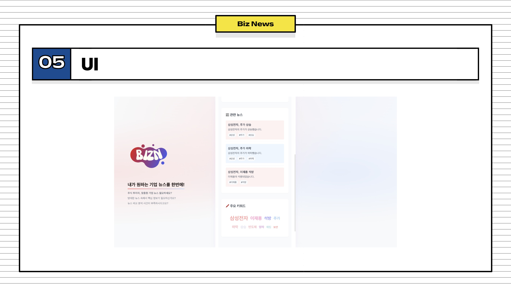

Cloud 2
Backend 1
Frontend 1
AI 2
Kakao Tech Bootcamp Hackathon project. Graph RAG based news recommendation service using Neo4j graph database for intelligent summarization and personalized recommendations. Won 2nd place in the competition.
Key Features

AI-powered news article summarization

Neo4j graph visualization of keyword relationships

Extracted keywords and related company information

Real-time stock market data integration
System Architecture
AWS
EC2
RDS
Docker
Nginx
GitHub Actions

My Contributions
Cloud Infrastructure
AWS EC2 and RDS management with Docker containerization and Nginx reverse proxy
CI/CD Automation
GitHub Actions pipeline for automated build, test, and deployment
Data Pipeline
Public data API integration and MySQL database storage logic
API Integration
Frontend-backend REST API connection and data flow design
Challenges & Solutions
Problem
48-hour hackathon required rapid infrastructure setup with zero room for deployment errors.
Solution
Pre-configured Docker Compose templates and GitHub Actions workflows for instant CI/CD, enabling the team to focus on feature development.
Problem
Connecting Neo4j graph database with traditional MySQL for hybrid data storage was complex.
Solution
Designed a dual-database architecture with clear API boundaries — MySQL for structured data and Neo4j for graph-based news relationships.